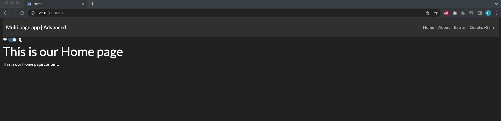
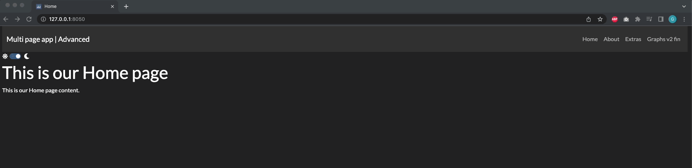
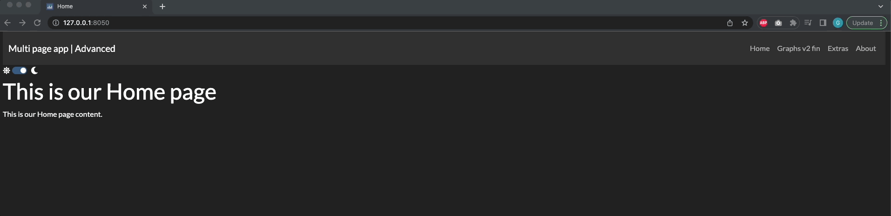
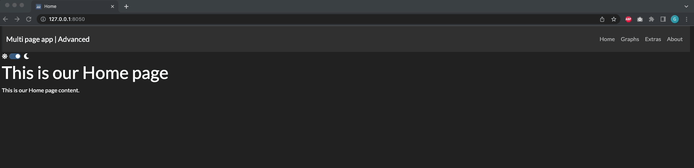

Chapter 15: Advanced Features of Multi-page Apps
Contents
Chapter 15: Advanced Features of Multi-page Apps¶
What you will learn¶
In this chapter we will build a more advanced multi page App, starting from the framework introduced in the previous chapter. We’ll learn how to:
Learning Intentions
Navigate the
page_registryCustomise several features of multi-page Apps such as: page name, order, meta tags
Include images into multi-page Apps
By the end of this chapter, you’ll be able to build the following App:
15.1 Advanced multi-page App Introduction¶
As a starting point for the chapter, let’s start by building a multi-page App structure with all the knowledge from the previous chapter. Starting from this template, we’ll be adding a couple of features in every section.
Our starting template is the following, you can download it here (the .zip file will need to be uncompressed):

The App structure consists in:
app.pyfileassetsfolder, which is currently emptypagesfolder with the following pages:Home,Graphs,Extras,About.
We want to build an App with a website-looking layout and therefore we’ve customised the app.py file in the following way:
Our header is represented by a
dbc.Navbarcomponent containing the title of our App and onedbc.NavLinkfor each page in our registry. From the registry, we exclude one pageif page["module"] != "pages.not_found_404". This is a default page that is used when the user tries to reach an invalid URL. In the next section we’ll see how it works and how we can customise it.Below the header, we’ve included a
theme_togglewhich is a theme switcher. We’ve picked two themes fromdbc.themesand the switcher will allow to switch between the twoNote that when instantiating our
app, we’ve enabled theuse_pages=Trueoption and used theexternal_stylesheetsto define the default theme (which isurl_theme2) together with enhanced fonts with the optiondbc.icons.FONT_AWESOME.
The obtained app.py is the following:
See the code
from dash import Dash, html
import dash_bootstrap_components as dbc
import dash
from dash_bootstrap_templates import ThemeSwitchAIO
# Configure Themes
url_theme1 = dbc.themes.FLATLY
url_theme2 = dbc.themes.DARKLY
theme_toggle = ThemeSwitchAIO(
aio_id="theme",
themes=[url_theme2, url_theme1],
icons={"left": "fa fa-sun", "right": "fa fa-moon"},
)
dbc_css = "https://cdn.jsdelivr.net/gh/AnnMarieW/dash-bootstrap-templates/dbc.min.css"
# App
app = Dash(__name__, use_pages=True, external_stylesheets=[[url_theme2, dbc_css], dbc.icons.FONT_AWESOME])
header = dbc.Navbar(
dbc.Container(
[
html.A(
dbc.Row([
dbc.Col(dbc.NavbarBrand("Multi page app | Advanced"))
],
align="center"),
href="/",
style={"textDecoration": "none"}
),
dbc.Row([
dbc.NavbarToggler(id="navbar-toggler"),
dbc.Nav([
dbc.NavLink(page["name"], href=page["path"])
for page in dash.page_registry.values() if page["module"] != "pages.not_found_404"
])
])
],
fluid=True,
),
dark=True,
color='dark'
)
app.layout = dbc.Container([header, theme_toggle, dash.page_container], fluid=True)
if __name__ == '__main__':
app.run_server(debug=False)
Each page code is very basic and will be enhanced in the following sections.
15.2 Default and Custom 404¶
Multi pages Apps include, by default, a landing page whenever the user tries to reach an invalid URL. The default 404-page looks like the following: 
The 404-page can be customised, in order to do so we need to create a new page which must be named not_found_404.py with the desired layout and it should be included into the pages folder.
Let’s create the following 404 custom page and see it in use:
import dash
from dash import html
dash.register_page(__name__)
layout = html.Div(children=[
html.H1(children='Page not found'),
html.Div(children='''
This is a custom 404 page layout
'''),
])
By adding this page into the pages folder from the app shown in the previous section, we will get the following:

15.4 Customising multi-page order¶
By looking at the App we have so far, we notice that the navbar shows our pages ordered alphabetically (after Home). This is a default property of Dash and can be customised with the desired order.
Let’s try to set a different order: when calling the dash.register_page(__name__) for each page the order prop is used:
pages/home.py :
dash.register_page(__name__, path='/', order='0')pages/about.py :
dash.register_page(__name__, order='3')pages/extras.py :
dash.register_page(__name__, order='2')pages/graphs_v2_fin.py :
dash.register_page(module = __name__, order='1')
In the gif below, pay attention to the order displayed in the navbar: 
Now try this yourself: go into the pages files and update the order prop with the desired order.
15.5 Customising multi-page names, titles and URLs¶
Even after customiseing the order as shown in the above section, our App can be further improved by renaming our pages. By looking at the navbar, we can see that our pages are named after the respective .py filenames.
However, our Graph filename contains some versioning (hence the page name “Graphs v2 fin”). This doesn’t look professional, but can be easily adjusted: we can obtain a much better result by specifying the following props when calling dash.register_page(__name__) for each page.
In the version of the app displayed below, we’ve introduced the following adjustments for each page:
pages/home.py :
dash.register_page(__name__, path='/', order='0', name='Home', title='Home')pages/about.py :
dash.register_page(__name__, order='3')pages/extras.py :
dash.register_page(__name__, order='2')pages/graphs_v2_fin.py :
dash.register_page(module = __name__, order='1', name='Graphs', title='Dash App | Graphs').
In the gif below, pay attention to the name displayed in the navbar and the name displayed into the browser tab for this page. This is the difference between name and title props:

Now try this yourself: go into the pages files and update the title and name props with other values.
15.6 Updating the default pages directory¶
We can further customise our app by renaming the folder which contains all pages. By default, the folder should be named pages, however, we can simply specify a custom name when instantiating our app.
Let’s suppose we want to rename the folder to app sections. We can do so by using the pages_folder prop when instantiating: app = Dash(__name__, use_pages=True, external_stylesheets=[[url_theme2, dbc_css], dbc.icons.FONT_AWESOME], pages_folder='app sections').
Note
When renaming the pages directory remember to rename all parts of the code which are using the pages folder. An example of this is the code used to build the Navbar. When we rename the folder we should also change our code from: for page in dash.page_registry.values() if page["module"] != "pages.not_found_404" to for page in dash.page_registry.values() if page["module"] != "app sections.not_found_404"